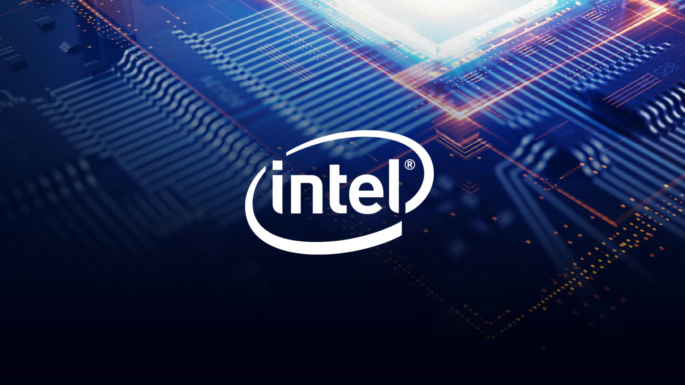
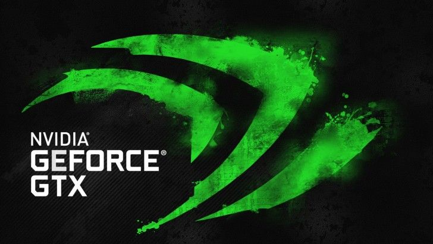

Intel
Nvidia

Founded: May 1, 1969; 51 years ago
Founder: Jerry Sanders
Website: https://www.amd.com
Products: Microprocessors, Graphics processing units
Advanced Micro Devices, Inc. (AMD) is an American multinational semiconductor company based
in Santa Clara, California, that develops computer processors and related technologies for
business and consumer markets. AMD's main products include microprocessors, motherboard,
chipsets, embedded processors and graphics processors for servers, workstations, personal
computers and embedded system applications.
Current Strongest CPU of AMD:
AMD Ryzen 9 5950X DirectX 12.00
AMD "Zen 3" is here, and we have with us the Ryzen 9 5950X, the absolute king of the series.
This 16-core/32-thread processor is designed to bring the HEDT (high-end desktop) segment down
to the mainstream desktop platform; that is, for those who don't care much about a quad-channel
memory interface or tons of PCIe lanes. The fact that HEDT chips don't dominate mainstream chips
at gaming goes to show that quad-channel isn't all that relevant to the client desktop segment.
With the 5950X, you could get yourself HEDT-kind multi-core muscle, higher memory clock headroom
to make up the bandwidth deficit, and a more affordable platform since the 5950X is compatible
with even mainstream chipsets, such as the AMD B550.
The AMD Ryzen 5 5950X in this review uses the "Zen 3" architecture, which is a combination of
micro and macro changes to the "Zen" architecture. At a macro level, we see AMD practically doing
away with the 4-core CCX design, resulting in each of the two 7 nm "Zen 3" chiplets having a
monolithic group of eight cores sharing a large 32 MB L3 cache. At a micro-level, AMD has invested
heavily in improving the various components inside the core, resulting in that sweet 19% IPC gain.
Together, the higher IPC cores and improved multi-core topology should put the 5950X on firmer
ground against not just Intel's LGA1200 "Comet Lake" parts, but also its Core X "Cascade Lake-X"
parts that go up to 18 cores.
AMD is launching the Ryzen 9 5950X at $799, making it the priciest mainstream desktop processor,
which is right up there with HEDT parts. Since this is a Socket AM4 part that doesn't temper down
its clock speeds to afford such a large core count, AMD claims that the 5950X will give you the
best of both worlds: leadership AAA gaming performance and productivity that can potentially save
you hundreds of dollars compared to an HEDT.
Current Strongest GPU of AMD:
Radeon™ RX 6900 XT Graphics
The AMD Radeon RX 6900 XT is here! This is the company's new flagship graphics card, targeted at maxed
out gaming at 4K UHD resolution with raytracing enabled. The Radeon RX 6900 XT was announced alongside
the RX 6800 XT and RX 6800 back in October—today is the launch. The new RX 6900 XT is based on the same
7 nm Navi 21 silicon, but maxes it out with all its shaders enabled, the highest clock speeds among the
three cards, and the highest possible overclocking headroom. AMD in its October announcement for the RX
6000 series stunned the gaming community by announcing that its latest cards offer competitive performance
with NVIDIA—the RX 6800 XT is in the same performance league as the RTX 3080, and the RX 6900 XT gets close
to the RTX 3090 while beating the RTX 3080.
For the most part, the RX 6800 XT and RX 6800 lived up to their hype, with the RX 6800 beating the RTX 3070
and the RX 6800 XT trading blows with the RTX 3080, but only in the majority of our game tests that lack
real-time raytracing. With raytracing enabled, the RX 6800 series cards perform closer to previous-generation
high-end "Turing" models, such as the RTX 2080 and RTX 2080 Ti. Still, there's enough for AMD to claim a return
to the high-end graphics segment after many years. The new RX 6900 XT being launched today offers the very best
from this generation and is targeted at enthusiasts or gamers who want the best AMD has to offer for 4K gaming.
The Radeon RX 6900 XT is being launched at an SEP price of $999, which lets it sit in the vast pricing gorge
between the $700 RTX 3080 and $1,500 RTX 3090. If AMD is claiming that the card trades blows with the RTX 3090,
it must beat the RTX 3080 to justify the $300 higher price and get close enough to the RTX 3090 to lure in buyers
with the $500 lower price.
The RX 6900 XT is based on AMD's new RDNA2 graphics architecture, which debuted earlier this year with the GPU that
powers the PlayStation 5 and Xbox Series X/S. This is important for AMD's RX 6000 series, as game developers build
their game engines around consoles first since that's where the money is, and it minimizes effort for them to optimize
their games for the RDNA2 architecture on the PC. The biggest feature addition with RDNA2 is full DirectX 12 Ultimate
API support, which includes real-time raytracing using the DXR API, Mesh Shaders, Variable Rate Shading (both tier-1
and tier-2), and Sampler Feedback. AMD has also bolstered the card's feature set with an updated Radeon Anti-Lag,
support for DirectStorage API, and resizable BAR (Smart Access Memory).